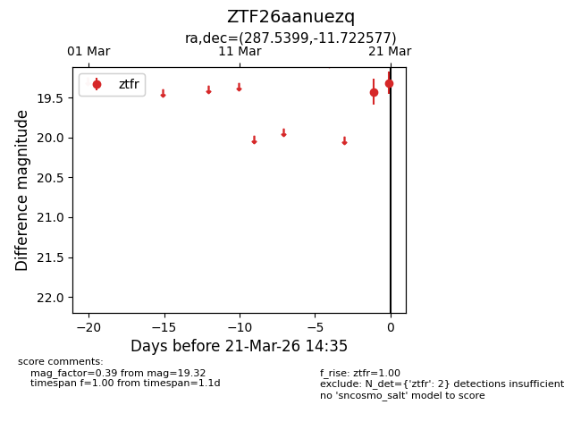
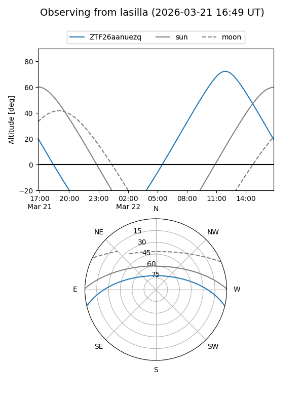
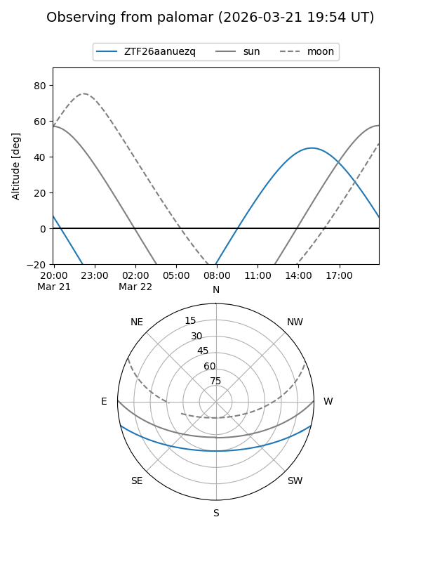
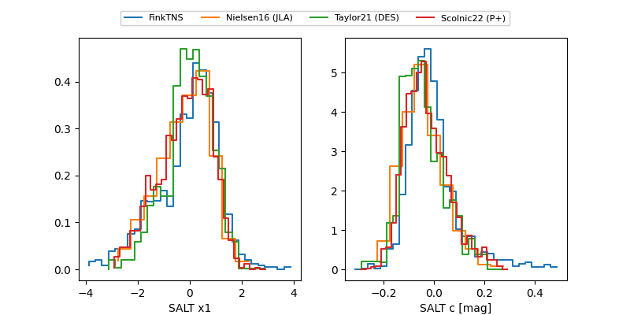

ZTF26aanuezq
Target ZTF26aanuezq at 2026-03-21 14:37
Aliases and brokers:
FINK: link
Lasair: link
ALeRCE: link
alt names
ZTF26aanuezq (ztf,fink_ztf)
Coordinates:
equatorial (ra, dec) = 287.5399,-11.72258
equatorial (HMS+DMS) = 19:10:09.58,-11:43:21.28
galactic (l, b) = (24.5155,-9.42465)
Flags:
Photometry:
last ztfr=19.32
2 ztfr detections
Lightcurve

Visibility


Additional plots
